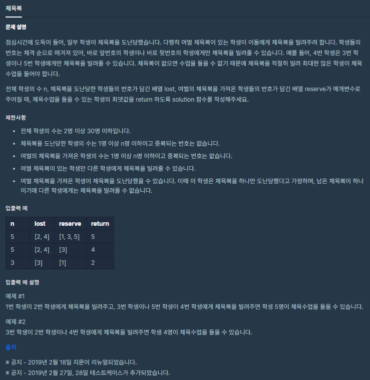
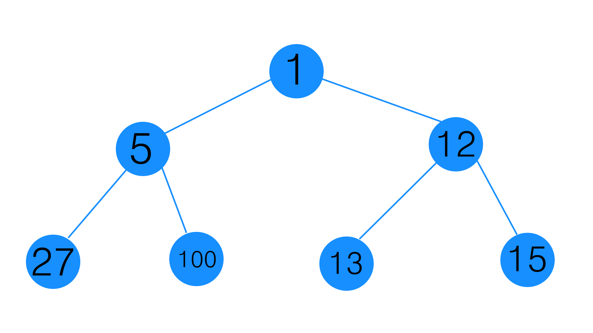

![[Level 1] 프로그래머스 탐욕법 체육복 kotlin 풀이](/2020/03/03/programmers-gym-suit/thumbnail.png)
[Level 1] 프로그래머스 탐욕법 체육복 kotlin 풀이
탐욕법! 프로그래머스 “모의고사” 문제를 풀어보자
문제 소개
이번에 풀어볼 문제는 프로그래머스 사이트의 코딩테스트 연습문제중 Level-1에 있는 체육복이라는 문제인데 카테고리가 탐욕법(Greedy)으로 되어있다.

체육복이 없는 학생에게 체급이 비슷한 바로 주변 번호의 학생들이 체육복을 빌려줘서 체육수업을 들을 수 있는 최대 학생수를 구하는 문제입니다.
| n | lost | reserve | return |
|---|---|---|---|
| 5 | [2, 4] | [1, 3, 5] | 5 |
입출력 예시를 봅시다!
5명의 학생이 있는데 2, 4번은 체육복이 없고, 1, 3, 5번은 체육복이 남는다고 합니다.
알기 쉽게
- 여분을 가져온사람 : 1
- 딱 하나만 가져온 사람 : 0
- 체육복이 부족한 사람 : -1
라고 표기한다고 생각하면
[1, -1, 1, -1, 1] 이 되겠네요
당연히 전체 체육복은 다 갖고 1개가 남겠네요.
이떄 1번과 3번이 우측에 주거나
([0, 0, 0, 0, 1])
3번과 5번이 좌측에 주는경우
([1, 0, 0, 0, 0])
모두 수업에 참여할 수 있어서 5명이 답이 되는겁니다!
문제풀이
중복 제거
이 문제는 주의사항을 보면 특이하게도 여분을 가져왔으나 도난을 당한 경우가 있다고합니다.
여분을 가져오고(+1) 도난을 당하면(-1) 그냥 자신의 것만 가져온 학생이 되기 때문에 먼저 두 배열의 중복요소를 제거해야합니다.
먼저 python에서 set끼리 - 연산을 하는것에서 착안해서 operator funtion을 이용해서 kotlin에서도 비슷한 느낌으로 쓸 수 있게 연산자 오버로딩 함수를 만들어봤습니다.
1 | operator fun IntArray.minus(arr: IntArray): MutableList<Int> = |
배열1 - 배열2 을 하게되면 배열1의 요소가 배열2에 들어있다면 제거해서 반환을 해줍니다. 차집합인 셈이죠!
[1, 2, 3] - [1, 2]->[3]
함수도 만들었으니 처음에 입력받은 두 배열에 적용해봅시다.
1 | val nLost = lost - reserve |
꽤나 간단하고 직관적으로 작성된 것 같습니다.
탐욕법이란?
탐욕법 카테고리의 문제니 탐욕법을 우선 알아봅시다.
탐욕법은 간단히 말해서

이런 트리가 있고 여기서 최대의 합을 구하는 문제라면 완전탐색으로 모든 경우를 확인한 후
1 - 5 - 100을 선택하겠지만
탐욕법으로 해결하면 1 만을 기준으로 바로 다음에 오는 요소만 비교하여 12를 고르고 이번엔 12를 기준으로 15를 내놓게 되는데
이렇게 순간순간마다 최적이라고 생각되는 결정을 하는 방식으로 진행하여 최종 해답에 도달하는 문제 해결 방식을 탐욕법(Greedy Algorithms) 이라고 합니다!
최적 해답을 찾지는 못하지만 완전탐색에 비해 실행속도가 굉장히 빠르다는 장점이 있습니다.
(사용하는곳에 따라서 다른데 수학적으로 증명하더라고요)
탐욕법으로 풀기!
우리는 여분을 가져온 사람 배열의 좌측(앞)부터 차례대로 반복을 하면서 좌측을 먼저 확인해서 가져오지 않은 학생이 있다면 체육복을 줍니다.
이때 좌측에는 체육복이 없는 학생이 없는데 우측에 체육복이 없는 학생이 있다면 우측으로 줍니다.
이렇게 지금 루프를 돌고있는 요소만을 기준으로 생각해서 탐욕적으로 풀이를 하면 됩니다.
체육복을 받은 학생은 배열에서 제거해버리면 마지막에 체육복이 없는 학생 배열의 크기가 곧 체육복이 없는 학생의 수가 되니까
전체 학생수 - 체육복이 없는 학생 배열 = 체육복이 있는 학생 수 가 되어서 정답이 되겠네요!
1 | nReserve.forEach { |
이렇게 반복을 돌면서 배열을 조작하고
1 | return n - nLost.size |
으로 제출하면 풀이가 끝납니다!
정답 코드
1 | class Solution { |
이번 문제를 풀면서 탐욕법이 무엇인가 알 수 있어서 좋았고 깔끔하게 풀려서 좋았어요!
출처: 프로그래머스 코딩 테스트 연습, https://programmers.co.kr/learn/challenges